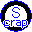
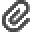

C# 何んでもいいから作る
WebTextScraping ★ウェブ テキスト スクレイピング★ Ver.1.0.0.1
『Web Text Scraping』は、指定したWebアドレスからテキストを抽出して表示するアプリケーションです。 アドレスを入力して「スクレイピング」ボタンを押すと、そのページからテキストのみが抽出され、画面に表示されます。抽出されたテキストの下部にはリンク一覧が表示され、そこからネットサーフィンを行うことも可能です。また、アンドゥ／リドゥ機能も搭載しています。ただし、ChatGPTのようなAPIを介して取得されたHTML以外の構造で描画されるテキストについては、抽出できない場合があります。ご利用の前に、msedgedriver.exe をダウンロードフォルダに配置してください。詳しい使い方については、同梱の「readme.txt」をご参照ください。
NewsReader ★GoogleのRssReader★ Ver.1.0.0.1
『NewsReader』は、GoogleのRss専用のオーソドックスなデスクトップアプリです。 Rssの記事をテロップで表示し、記事をクリックするとブラウザで開きます。プロキシ経由では表示できません。詳しい使い方については、同梱の「readme.txt」をご参照ください。
Telop ★テロップ★ Ver.1.0.0.6
『Telop』は、テキストファイルやクリップボードの文字列をテロップとして表示する、タスクトレイ常駐型アプリケーションです。今回のバージョンアップでは、テキストファイルや文字列に加え、フォルダのドラッグ＆ドロップ操作にも対応しました。特にフォルダをドロップした場合、そのフォルダ内に含まれるすべてのテキストファイルの内容を一定間隔で繰り返し表示します。詳しい使い方については、同梱の「readme.txt」をご参照ください。
JapaneseConv ★誤ってローマ字入力した文字を日本語に変換★ Ver.1.0.0.0
『JapaneseConv』は、ローマ字入力をひらがなに変換するアプリです。起動すると、アプリはタスクトレイに常駐します。ローマ字をマウスで選択し、半角/全角キーを2回押すと、ひらがなに変換されます。ひらがなを再度選択し、Windowsのコンテキストメニューで再変換することも簡単に行えます。詳しい使い方については、同梱の「readme.txt」をご参照ください。
Zoom Cursor ★ズームカーソル★ Ver.1.0.0.4
拡大鏡は、たまに使いたい時があるものの起動が面倒で使っていませんでした。Escキーを2回押しで表示、1回で非表示にできるようにしました。マウスカーソルが拡大ルーペの中心となり、クリックやドラッグ選択も通常通り行えます。今回のバージョンアップでは、目障りだったちらつきを低減しました。アプリはタスクトレイに常駐し、左クリックで表示・非表示を切り替え、右クリックでコンテキストメニューを開くことができます。また、サイズの切り替えが可能で、倍率は2倍のみ対応しています。
Animation Editor ★Gifアニメーションエディター★ Ver.1.0.0.2
『Animation Editor』は、画像の読み込み、編集、保存を行うアプリケーションです。
画像のペイント機能は含まれていません。
詳細については、同梱の「readme.txt」をご参照ください。
MousePoint ★マウスカーソル見つけたい★ Ver.1.0.0.1
『MousePoint』はマウスカーソルの位置を視覚的に強調する補助機能です。Windows Power Toolsにある機能を見て、それを参考に作成しましたが、技術的な理由で完全に同じ機能を実現することができませんでした。
詳細については、同梱の「readme.txt」をご参照ください。
Flocking 3D ★整列/結束/分離★ Ver.1.0.0.3
『Flocking』は群れを形成する生物の集団行動を指す科学用語です。
鳥や魚などの群れが協調して動き、集団での安全性や生存率を高める動きを、以下の３つのルールに基づいてアルゴリズムで表現します。
ボイドの色変更機能を追加しバージョンアップ。
詳細については、同梱の「readme.txt」をご参照ください。
PaintMixing ★カラーパレット★ Ver.1.0.0.0
『PaintMixing』は、絵の具を混ぜ合わせて、作られた色とそのRGB値を表示するアプリです。色を混ぜて、どんな色ができるか試してみましょう！最大5つの色とその分量を指定して、混ぜ合わせた色を表示します。
詳細については、同梱の「readme.txt」をご参照ください。
Rain Drop ★雨の落下速度を計算★ Ver.1.0.0.0
『Rain Drop』は、雨の落下速度を計算して表示するアプリです。
雨は空気抵抗の影響で限界速度に達します。このことを聞いて「なるほど」と思い、その速度を計算してみました。「これなら避けられそうだ」と感じた結果をお楽しみください。(^^♪
詳細については、同梱の「readme.txt」をご参照ください。
Sunrise Time ★日の出日の入り時刻表示★ Ver.1.0.0.1
『Sunrize Time』は日の出日の入り時刻を日本時間で表示します。どうやって計算するのか興味を持って作ってみました。バグ修正しバージョンアップ。
・日時の変更
・地点の追加/削除
・地点の名前変更 など
詳細については、同梱の「readme.txt」をご参照ください。
Outlook Calendar Check ★スケジュール確認★ Ver.1.0.0.0
『Outlook Calendar Check』は、Microsoft Outlookのカレンダーを簡単にチェックできるアプリです。
・起動時に当日の予定をMessageBoxで表示します。
・指定した日数内の予定を計画タイトルのキーワードで検索できます。
このアプリは、以上の2つのシンプルな機能を備えています。
Dakuten ★濁点★ Ver.1.0.0.0
『Dakuten』は、以下のような状況で利用するテキストファイル変換アプリです。
・ファイルが異なる文字コードでエンコードされている
・濁点や半濁点が特定の環境で特殊な形式に変換されている
このアプリは、機種依存文字となってしまう濁点や半濁点を適切に変換し、ファイルを上書き保存します。
テロップの制作中に、Web上の文字列をコピーしてテキストファイルに保存した際、この問題に直面しました。
しかし、この事象はあまり頻繁に起こるものではありません。テロップにはこの機能が含まれています。
QrCode ★QRコードリードライター★ Ver.1.0.0.2
このアプリは、PC上でQRコードの作成および読み取りを行うためのツールです。NuGetの.NETパッケージを利用して開発されています。最新バージョンでは、以下の機能が追加および改良されました。
・アドレスの日本語文字に対応
・PC上のファイルパスや既定アプリケーションへの対応
・QRコードの解析機能を新たに追加
詳細については、同梱の「readme.txt」をご参照ください。
Wall Viewer ★壁紙ビューア★ Ver.1.0.0.0
PCのデスクトップを画像ビューアとして利用できる、タスクトレイ常駐型アプリです。アプリを終了すると、壁紙は自動的に元の設定に戻ります。詳細については、同梱の「readme.txt」をご参照ください。
WebPictureBrowser ★ホームページを画像で閲覧★ Ver.1.0.0.4
最新のホームページを画像として簡単に閲覧できるプログラムです。画像表示専用のため、Webブラウザのようにリンクをクリックして移動することはできませんが、取得した最新10件のアドレスを記録し、ページの再確認に便利です。たとえば、私は数時間おきに天気予報を確認する際に活用しています。取得する画像は大きめのサイズで、必要な部分を編集してトリミングする機能も備えています。トリミング設定は記録されるため、次回以降も同じ範囲で表示が可能です。今回の更新では、不具合の修正を行いました。
 Moon ★月～まったりと～★ Ver.1.0.0.1
Moon ★月～まったりと～★ Ver.1.0.0.1
日本時間での月の満ち欠けをタスクバーのアイコンに表示する、シンプルなプログラムです。月齢は0.1日単位で表示され、分単位の精度を持っています。詳しい使い方については、同梱の「readme.txt」をご参照ください。
ClipArt ★画像付箋★ Ver.1.0.1.0 イメージ登録機能追加
このプログラムは、画像キャプチャ、編集、アニメーションGIFの作成、そしてオリジナルアイコン風のランチャー作成が可能な多機能ツールです。詳細については、同梱の「readme.txt」をご参照ください。
ランチャー機能は、URL、EXEファイル、パスなどをドラッグ＆ドロップすることで強化され、リンクからアプリやファイル、ウェブページを簡単に開けます。また、お好みの画像を使ってデスクトップをカスタマイズすることもできます。画像の縁取りや扇形への変形といった編集機能も搭載しています。
さらに、画像ビューアとキャプチャ機能を組み合わせたアプリとして、画像をドラッグ＆ドロップしたり、クリップボードから貼り付けて表示することが可能です。メインフォームでは、マウスの右ボタンをドラッグすることで、マウス位置のオブジェクトが表示され、ボタンを離すとキャプチャが実行されます。
画像を保存する際は、フォームをマウスの左ボタンで押しながらドラッグ＆ドロップ可能な場所に移動させると、自動的に「yyyyMMddhhmmss.png」という形式で保存されます。また、フォームのアイコンをクリックするとメニューが表示され、Win+Vキーを使用してクリップボードの履歴を確認できます。
ShortcutToExeSleeper ★アプリ遅延起動ショートカットを作成★ Ver.1.0.0.0
指定したEXEファイルの起動時間を遅延させるショートカットを作成できるプログラムです。スタートアップに登録したショートカットでエラーが発生する場合でも、起動を指定した秒数だけ遅延させることで、問題を回避できます。作成したショートカットは、デスクトップやスタートアップフォルダに保存することが可能です。詳しい使い方については、同梱の「readme.txt」をご参照ください。
ImageComparison ★2画像の差分をハイライト★ Ver.1.0.0.0
2つの画像を比較し、差分をハイライト表示するアプリです。WinMergeというアプリでも同様の機能があると知り、「面白そうだ」と思って参考にしながら作成しました。詳しい使い方については、同梱の「readme.txt」をご参照ください。
In Picture ★ピクチャインピクチャ風★ Ver.1.0.0.2 シャッフル
タスクトレイ常駐型の画像ビューアです。左クリックでフォームの表示・非表示を切り替え、右クリックでコンテキストメニューを開くことができます。今回のバージョンアップでは、シャッフル機能を追加しました。詳しい使い方については、同梱の「readme.txt」をご参照ください。
Color Scale ★高精度カラースケール★ Ver.1.0.0.0
『Color Scale』は、デスクトップ上で青から赤のスペクトル色を、指定したしきい値で区切って表示するタスクトレイ常駐型アプリです。このアプリは、マウス位置の画像のRGB値を調べるのではなく、スペクトル色をしきい値ごとに区分し、その数値を表示します。起動後は、タスクトレイのアイコンをクリックすることで表示のON/OFFを切り替えることができます。ただし、キャプチャした画像を拡大・縮小すると色補完が行われ、正確な値が得られない場合があるためご注意ください。
 Ellipse5 ★5点を通るだ円★ Ver.1.0.0.0
Ellipse5 ★5点を通るだ円★ Ver.1.0.0.0
だ円の方程式を解くことで、5つの座標からだ円を描けることを知り、調べたところ、JavaScriptで書かれたWebプログラムを見つけました。それを参考にして、中心点、幅、回転角度を求めるプログラムを作成しました。私が使用しているCADでは描画が可能ですが、ここでは計算のみを行います。ただし、5つの点でだ円を作れない座標値を入力すると、異なる結果が返されることがあります。また、このアルゴリズムを利用した計算ソフトも存在しますが、スプラインが描けない古くて低レベルなものであるようです。
ffmpegStream ★動画→GIFアニメーション変換★
画像を読み込み、編集してGIFアニメーションを作成するアプリです。起動したファイルにコマ数、送り速度を入力し、変換ボタンを押し動画ファイルを選択し、続いてgifファイル保存ダイアログで名前を付けて保存します。インターネットでffmpeg.exeを検索、ダウンロードしffmpegStream.exeと同じフォルダに置いて実行しなければ動きません。
CalculatorMini ★小さな電卓★
画像キャプチャ機能を備えた電卓アプリです。フォームのキャプションバーに演算式を入力し、Enterキーを押すことで計算が実行されます。計算結果はクリップボードにテキストとして保存されます。表示サイズを「ミニ」に設定すると、計算結果がキャプションバーに表示されます。レギュラー表示では、演算式とその結果が画像として表示されます。演算方法や関数については、メニューの「ヘルプ」をご参照ください。
Scope ★画像を透かし表示★
昔見かけたことがある、画像のスケルトン描画を行うアプリです。ショートプログラムのアイデアがなかなか思いつかなかったのですが、使い方は簡単です。透かし表示したい画像を表示した状態でアプリを起動すると、キャプチャが行われ、画面中央にフォームが最前面で表示されます。デスクトップに別の画像を表示しても、中央の画面にはアプリ起動時の画像が表示されたままです。フォームはマウスの左ボタンでドラッグして移動でき、外枠をドラッグすることでサイズ変更が可能です。終了はマウスの右ボタンでクリックします。さらに、マウスホイールを使って透明度を調整することができます。起動時は1画面で表示されますが、Ctrlキーを押しながら起動すると、マルチ画面表示が可能です。
moji ★文字を大きく表示★
文字の画数が多く、書きにくい場合には、文字を大きく表示したいと思います。そんなとき、フォーム内のテキストボックスに文字を入力し、マウスドラッグまたはマウスホイールを使って拡大できます。
 Unformat Clipboard Text ★クリップボードテキストから書式を取り除く★ Ver.1.0.0.3
Unformat Clipboard Text ★クリップボードテキストから書式を取り除く★ Ver.1.0.0.3
これはタスクトレイに常駐するアプリです。文字列をクリップボードにコピーし、貼り付ける際に書式を解除したい場合があります。そんな時、タスクトレイのアイコンをクリックすると、クリップボードに書式を取り除いた文字列がコピーされます。その後、その内容を貼り付けることで、書式なしのテキストを使用することができます。
Second Counter ★首起こし深呼吸は、5秒息を吸って、5秒息を吐く。これを繰り返すためのデジタルカウンター★ Ver.1.0.0.1
このアプリは、1秒間隔でカウントするループ機能を持っています。タスクトレイのアイコンを右クリックすることで、設定を変更できます。表示は半透明で、マウスに反応しないため、マウス操作の邪魔になりません。
InputToolTip ★マウスとキーボードキーからの入力をマウスカーソル上にツールチップ表示★
PC画面で操作説明を動画キャプチャしたいとき、ショートカットキーを押してもその動作は記録されません。そこで、マウスカーソルの右上にツールチップを表示し、キー操作を映し込みます。表示される文字のフォント変更や、半角時のみの表示、文字の変換が可能です。また、フォルダ内の InputToolTipConfig.ini に変換候補を登録できますが、この設定は前述の設定よりも優先されます。
 Screen Grid ★PC画面にグリッドを表示★
Screen Grid ★PC画面にグリッドを表示★
PC画面に方眼紙を貼り付けてみませんか？アイコントレイをクリックして操作します。左クリックで終了メニューを表示し、右クリックで表示/非表示やサイズ変更のメニューを操作できます。
Mouse Rader ★マウスレーダー★
フォームからマウスの位置と距離をビジュアル表示します。使い方は、スタートアップフォルダにexeファイルを保存し、PC起動時に自動的に実行されるようにすることです。フォームは半透明表示にし、タスクバーの邪魔にならない場所に移動させます。半透明でないと見えなくなるので、ご注意ください(^-^;。終了はコンテキストメニューから行えます。ただし、タスクバーを自動的に隠す設定には対応していません。
TextureViewer ★画像の3D表示 ～立体的に見えるわけではありません～★
マウスの右ボタンをクリックすると、コンテキストメニューが開きます。また、画像ファイルをドラッグ＆ドロップで開くこともできます。画像は左クリックで移動でき、マウスホイールで拡大・縮小、右クリックで回転させることができます。なお、OpenTK.dll および GLSharp.dll を使用しています。
TopInsert ★アクティブフォームの最前面表示/解除★
アクティブフォームの常に最前面表示/解除は、Insertキーで切り替えられます。スタートアップフォルダに保存するには、C:\Users\[ユーザー名]\AppData\Roaming\Microsoft\Windows\Start Menu\Programs\Startup に配置してください。これにより、PC起動時に自動的に実行されます。ただし、Insertキーが有効なアプリでは、Ctrlキーを押しながらInsertキーを押す必要があります。
VoicePrezenter Ver1.1 ★恥ずかしがりやのプレゼンテーター★
Microsoft PowerPointファイルをドラッグ＆ドロップすると、ノートとスライド画像が表示されます。ノートは編集可能で、メディアプレーヤーを使って音声を読み上げることができます。実行はボタンを押すか、Ctrl + Sキーで行い、ファイルは上書きされます。履歴の前後移動はCtrl + ←→、10個飛ばして移動するにはCtrl + ↑↓を使用します。テキスト全選択はCtrl + Aで行えます。
ClipBoard ★クリップボードの音声読み上げ★
クリップボードを監視し、文字列と画像の履歴を最新の100個まで記録します。文字列はWscriptを使用してWaveファイルを作成し、メディアプレーヤーで読み上げます。読み上げのON/OFFは、Ctrl + Wキーで切り替えることができます。テキストボックスでは内容を編集でき、クリップボードにコピーするにはボタンを押すか、Ctrl + Sを使用します。履歴の前後移動はCtrl + ←→、10個飛ばして移動するにはCtrl + ↑↓を使用します。履歴の削除はCtrl + Del、テキスト全選択はCtrl + Aで行えます。また、ファイルのドラッグ＆ドロップにも対応しています。
CaptureStamp ★PC画面を重ねて表示★
画像を半透明にして残像を表示します。フォーム上でマウスの右ボタンをクリックし、ドラッグして画像上でボタンを離すと、一見、特に変わったようには見えませんが…。フォームは常に最前面に表示されるため、他のアプリケーションに悪影響を与えることがあります。
TopMostCalculator ★電卓は、いつも最前面★
Windowsのアプリ「電卓」を起動し、常に最前面に表示します。これにより、他のアプリケーションの下に隠れる煩わしさから解放され、アクティブウィンドウ以外が暗く表示されます。この機能は、「Le Dimmer」という便利なソフトウェアを模倣したものです。OSは日本語版Windowsで、アプリケーション名は「電卓」に対応しています。
WindowLight ★PC画面のアクティブフォーム以外を暗くする★
アクティブウィンドウ以外を暗く表示します。この機能は、「Le Dimmer」という便利なソフトウェアを模倣したものです。
トップへ戻る